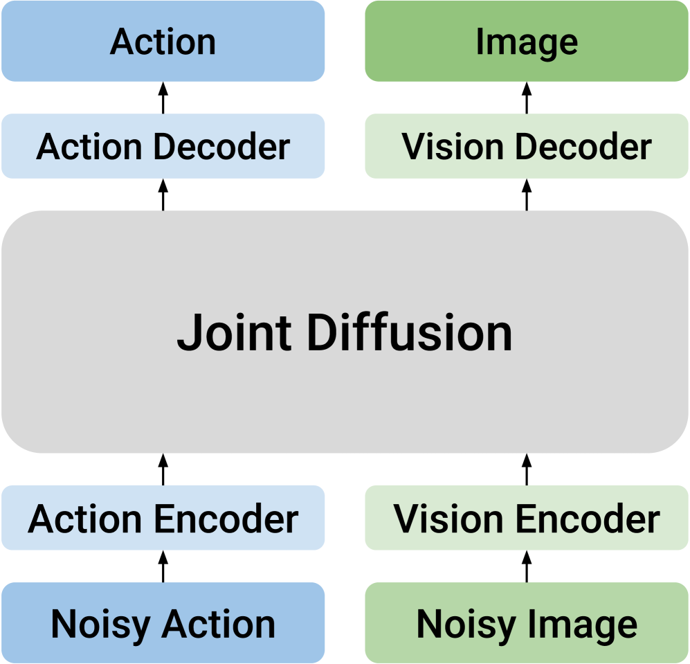
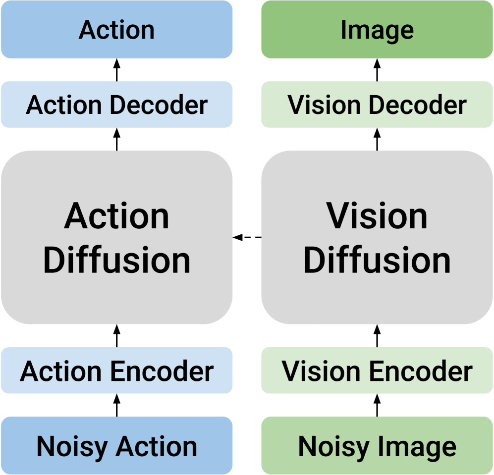
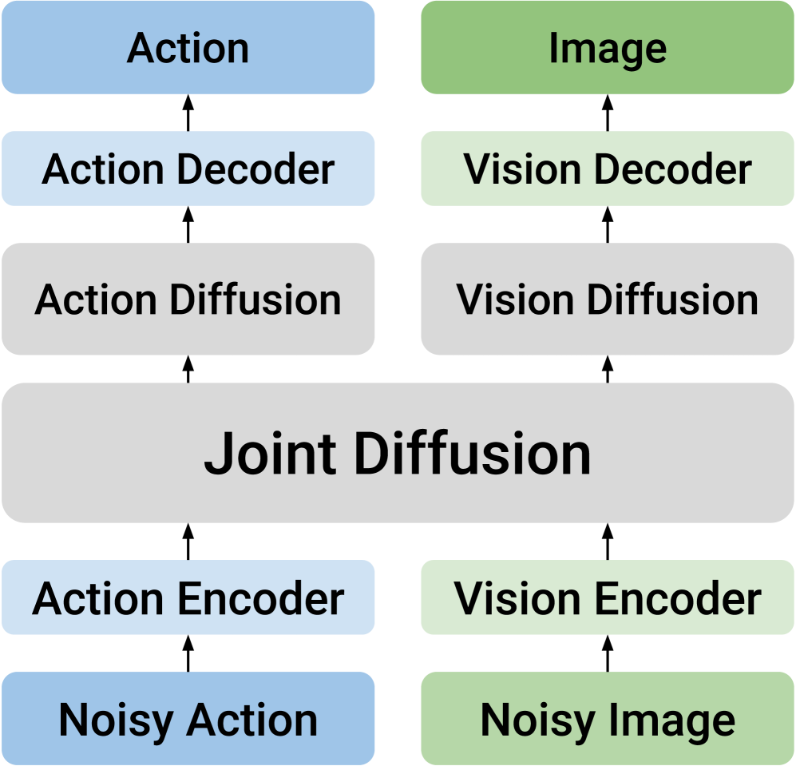
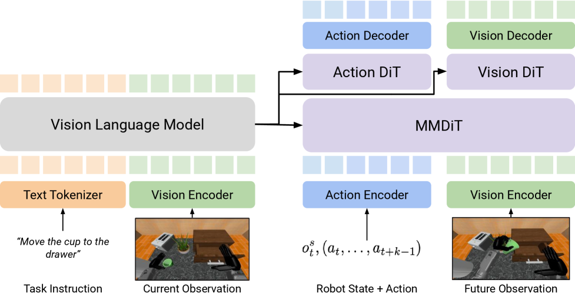
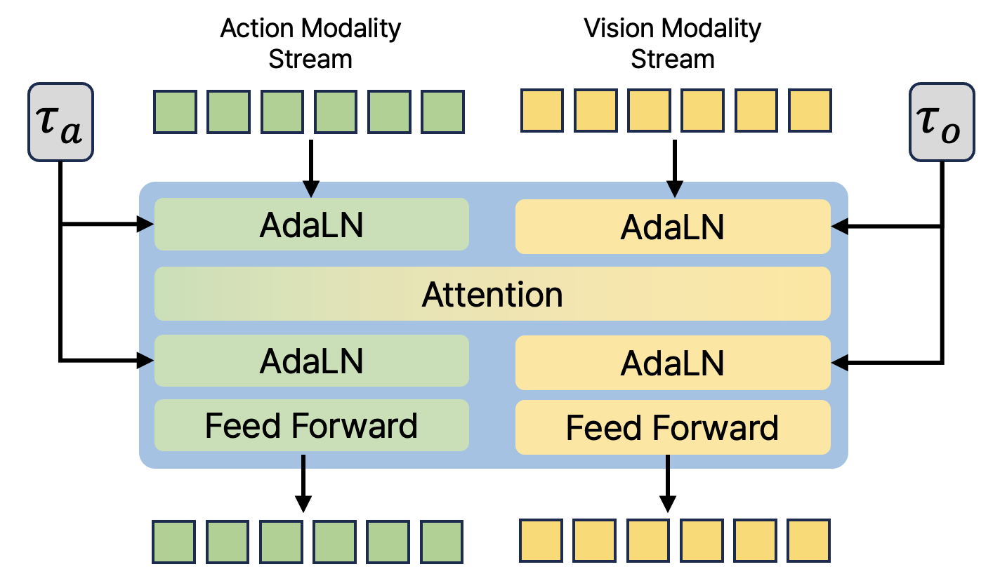
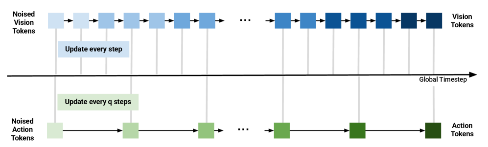
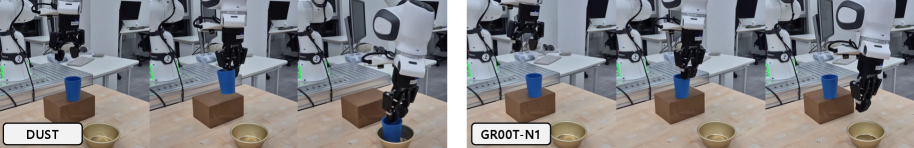

Dual-Stream Diffusion for World-Model Augmented Vision-Language-Action Model
1. Quick overview of the paper
| What should the paper solve? | World model augmentation VLA often requires simultaneous prediction of action sequences and next-state visual representations. Actions are low-dimensional, time-smooth control sequences; future visual states are high-dimensional, spatially structured visual tokens. Unified diffusion is prone to modal conflicts, while pure causal separation limits the two-way information flow. |
|---|---|
| The author's approach | Proposed DUST: MMDiT dual-stream architecture, independently sampling noise time step $(\tau_A, \tau_o)$ by mode, decoupled flow matching loss, and action/vision asynchronous sampling during inference. |
| most important results | There is a stable gain on RoboCasa and GR-1 relative to FLARE/GR00T-N1.5; the real Franka Research 3 average success rate is 0.677, which is higher than GR00T-N1.5's 0.547 and FLARE's 0.557; after BridgeV2 action-free video pre-training, the average success rate of RoboCasa 100 demos has increased from 0.501 to 0.585. |
| Things to note when reading | The core of this article is not to "add a future image prediction head", but to use dual time steps and dual stream structures to constrain actions and future observations during training, while avoiding pressing two variables with very different statistical structures into a shared latent space. |
Difficulty rating: ★★★★☆. Need to understand diffusion policy, flow matching, VLA, VLM feature conditioning, world modeling, MMDiT/AdaLN, and success rate evaluation of robot benchmarks.
Keywords: Vision-Language-Action, world model, multimodal diffusion transformer, decoupled flow matching, asynchronous sampling, RoboCasa, GR-1, BridgeV2.
Core contribution list
- Dual stream MMDiT: Action tokens and future observation tokens maintain their own channels during most calculations, exchanging information only in shared attention.
- Noise independently by mode: During training, $\tau_A$ and $\tau_o$ are sampled respectively, allowing the model to see combinations such as "clean action + noisy future state" and "noisy action + clean future state", and explicitly learn the forward and reverse cross-modal dependencies.
- Decoupled flow matching loss: Write the goal of joint diffusion as a weighted sum of action loss and world-modeling loss to avoid designing a unified velocity field for both modes.
- Asynchronous test-time scaling: During inference, fixing $N_A$ and increasing $N_o$ only allows the visual token to be denoised in a more fine-grained manner; the appendix shows that increasing both simultaneously will harm performance.



2. Motivation
2.1 Why VLA needs world model
Standard VLA usually encodes the current image, robot status and language instructions into semantic conditions, and then the action expert directly generates action chunks. They make good use of the visual and language understanding capabilities of VLMs, but their weakness is that they do not explicitly model how actions change the environment. For robot control, this gap is very important: whether the grasp is aligned, where the gripper will go in the future, and whether the target may be pushed away, these are not problems that can be solved stably by just looking at the current frame.
The idea of world model augmented VLA is to simultaneously predict actions and future visual states. In this way, the model not only fits the distribution of expert actions, but also explains the visual consequences corresponding to the actions. The paper formulates this goal as learning the joint distribution of actions $A_t$ and future observation embeddings $\tilde{o}_{t+k}$.
2.2 Why "direct joint diffusion" is not enough
There is unified joint diffusion that puts action tokens and future visual tokens together and generates them uniformly using the same diffusion model. This design implies a strong assumption: actions and vision can be co-hosted by a shared latent space. The paper points out that this will cause modal conflicts: actions are low-dimensional, continuous, and smooth control trajectories; future visual embeddings are high-dimensional, semantic objects with spatial structure. They require different noise schedules, different denoising granularity, and different normalization conditions.
Another type of causal design divides the two modes into different models and connects them with one-way conditions. For example, predict future vision first and then generate actions, or generate actions first and then predict future states. This preserves modal expertise but sacrifices two-way knowledge transfer. It is this trade-off that DUST wants to solve: while retaining their respective structures, they must also allow two-way interaction.
2.3 The core hypothesis of this paper
Core assumptions: Actions and future visual states should not share the same denoising path, but should share the same cross-modal attention interface. During training, if actions and vision are independently noisy, the model will be forced to learn "what future state the action causes" and "what action can explain this future state" under different noise combinations.
4. Detailed explanation of method
4.1 Problem setting and baseline VLA
The dataset consists of expert trajectories: $\mathcal{D}=\{T_1, T_2, \ldots\}$. Each track contains task instructions $I$, observation $O_t=(o_t^v, o_t^s)$ and action chunk $A_t=(a_t, \ldots, a_{t+k-1})$. The goal is to predict action chunks under the current visual observation, robot body state and language instructions.
The standard diffusion action expert first constructs the noisy action:
$$A_t^\tau = \tau A_t + (1-\tau)\epsilon, \qquad \epsilon\sim\mathcal{N}(0, I).$$The velocity network is then trained to predict the velocity of a linear path:
$$\mathcal{L}_{\mathrm{FM}}(\theta)=\mathbb{E}\left[\left\|V_\theta(\Phi_t, A_t^\tau, o_t^s)-(A_t-\epsilon)\right\|^2\right].$$Intuition: When $\tau=0$, it is pure noise, and when $\tau=1$, it is a real action; the network learns the direction of "moving from the current noisy action to the real action".
The goal of the world model is not to predict pixels, but to predict the future image embedding $\tilde{o}_{t+k}$ after executing the action chunk. This embedding comes from the visual encoder in VLM, and the Eagle-2 related SIGLIP-2 representation is used in the paper experiments.
4.2 DUST architecture: dual streams but shared attention

The core input of DUST is the triple $(o_t^s, A_t^\tau, \tilde{o}_{t+k}^\tau)$. After the action token and future vision token enter the MMDiT block, most operations retain two independent channels; they are only temporarily merged in the shared cross-modal attention layer so that the action stream and vision stream can exchange information, and then immediately separated back to their respective streams.
Each stream has its own timestep embedding, injected via AdaLN. This is very critical: if action and vision use the same timestep condition, there is no way to express training samples such as "the action is very clean but the vision is still very noisy". The appendix further explains that the implementation of the paper is to make light modifications to the original MMDiT block, allowing AdaLN of each modal stream to accept independent time step embedding. Appendix A.2/Figure 6.

After several shared MMDiT blocks, DUST then sends the two streams into modality-specific DiT blocks respectively. The main experiment of the paper uses 12 MMDiT blocks, followed by 4 action-side DiT blocks and 4 vision-side DiT blocks. The meaning of this design is: try to learn cross-modal dependencies in the front stage, and let each modality complete fine denoising in the later stage.
4.3 Decoupling noise and flow matching loss
DUST does not only sample one $\tau$ during training, but samples the action time step $\tau_A$ and the visual time step $\tau_o$ separately:
The model outputs two velocity fields:
$$V_\theta(\Phi_t, A_t^{\tau_A}, \tilde{o}_{t+k}^{\tau_o}, o_t^s)=[V_\theta^A, V_\theta^o].$$Corresponding to two flow matching losses:
$$\mathcal{L}_{A}=\mathbb{E}\left[\|V_\theta^A-(A_t-\epsilon_A)\|^2\right], $$ $$\mathcal{L}_{\mathrm{WM}}=\mathbb{E}\left[\|V_\theta^o-(\tilde{o}_{t+k}-\epsilon_o)\|^2\right].$$The total loss is:
$$\mathcal{L}_{\mathrm{Joint}}=\mathcal{L}_{A}+\lambda_{\mathrm{WM}}\mathcal{L}_{\mathrm{WM}}.$$Intuition: Action and future vision each learn their own "denoising direction", but the network sees each other's current noisy/clean state in shared attention, so the joint relationship is still learned.
This design allows training samples to cover a variety of cross-modal conditions. For example, when $\tau_A\approx1, \tau_o\approx0$, the model needs to infer future vision based on cleaner actions; when $\tau_A\approx0, \tau_o\approx1$, the model needs to infer its actions based on cleaner future vision. This is the basis of the mechanism that DUST claims to be able to learn bidirectional joint distribution.
4.4 Reasoning: asynchronous vision-action joint sampling

The inference phase starts with two noise variables: $A_t^0\sim\mathcal{N}(0, I_A)$, $\tilde{o}_{t+k}^0\sim\mathcal{N}(0, I_v)$. Let action diffusion steps be $N_A$ and vision diffusion steps be $N_o=qN_A$. The global small step size is $\Delta\tau_o=1/N_o$, and the vision is updated every step; the action is updated every $q$ step, corresponding to $\Delta\tau_A=1/N_A=q\Delta\tau_o$.
Intuition: The action is low-dimensional, and too many steps may over-integrate or introduce errors; in the future, visual embedding is high-dimensional, and more denoising steps are usually beneficial. The structure of DUST exposes this asymmetry as an inference-time knob.
4.5 Training and inference pseudocode compressed version
训练 DUST:
1. sample batch (o_t^v, o_t^s, I, A_t, o_{t+k}^v)
2. Phi_t = frozen VLM(o_t^v, I)
3. future embedding tilde{o}_{t+k} = VLM_img(o_{t+k}^v)
4. independently sample tau_A, tau_o and Gaussian noises
5. construct noisy action and noisy future embedding
6. encode action/state tokens and vision tokens separately
7. run MMDiT blocks with shared attention and modality-specific AdaLN
8. run modality-specific DiT blocks
9. decode V_theta^A and V_theta^o
10. optimize L_A + lambda_WM L_WM with AdamW
异步采样:
1. initialize action and vision tokens from Gaussian noise
2. choose N_A and N_o = q N_A
3. update vision every small step
4. update action only every q small steps
5. return final denoised action chunk and future observation embedding
5. Experiment
5.1 Unified experimental settings
- VLM backbone: Freeze Eagle-2, using layer 12 semantic features as diffusion module conditions.
- World model goals: The future image is represented by SIGLIP-2/Eagle-2 visual representation to obtain 256 tokens, which is then reduced to 64 future image tokens by $2\times2$ average pooling.
- diffusion token consists of: 1 state token, 16 action tokens, 64 future image tokens.
- Main model structure: 12 MMDiT blocks + 4 modality-specific DiT blocks.
- loss weight: $\lambda_{\mathrm{WM}}=1.0$, from ablation experiments.
- baselines: GR00T-N1.5; and the GR00T-N1.5 + FLARE loss reproduced by the author. FLARE has no official code or checkpoint. The author uses the same VLM backbone and the same SIGLIP-2 future embedding target to reproduce FLARE loss. Appendix A.2.
5.2 Main results: RoboCasa, GR-1, real Franka
| RoboCasa | 100 demos | 300 demos | 1000 demos | |||||||||
|---|---|---|---|---|---|---|---|---|---|---|---|---|
| Method | PnP | OP/CL | Other | Avg. | PnP | OP/CL | Other | Avg. | PnP | OP/CL | Other | Avg. |
| GR00T-N1.5 | 0.215 | 0.603 | 0.468 | 0.417 | 0.272 | 0.660 | 0.466 | 0.450 | 0.323 | 0.757 | 0.508 | 0.508 |
| + FLARE | 0.230 | 0.648 | 0.498 | 0.446 | 0.380 | 0.767 | 0.562 | 0.553 | 0.459 | 0.837 | 0.682 | 0.646 |
| + DUST | 0.295 | 0.760 | 0.510 | 0.501 | 0.423 | 0.807 | 0.581 | 0.585 | 0.483 | 0.863 | 0.686 | 0.663 |
RoboCasa results show that DUST is higher than FLARE on three data scales: 100/300/1000 demos. Especially in the 100 demos scenario, the average success rate of DUST is 0.501, which is 0.084 higher than GR00T-N1.5's 0.417, and 0.055 higher than FLARE's 0.446, indicating that explicit dual-stream world modeling is more helpful for low data volumes.
| GR-1 | 300 demos | 1000 demos | ||||
|---|---|---|---|---|---|---|
| Method | PnP | Art. | Avg. | PnP | Art. | Avg. |
| GR00T-N1.5 | 0.176 | 0.283 | 0.203 | 0.307 | 0.310 | 0.308 |
| + FLARE | 0.340 | 0.330 | 0.337 | 0.393 | 0.324 | 0.363 |
| + DUST | 0.358 | 0.367 | 0.360 | 0.422 | 0.413 | 0.420 |
GR-1 is a higher-dimensional humanoid manipulation scenario with an action space of 29 DoF. DUST has an average success rate of 0.420 in 1000 demos, which is higher than FLARE's 0.363. The paper emphasizes that GR-1 training is sensitive to batch size and requires larger-scale training. Appendix A.2/A.3.


| Real Franka | Task 1 | Task 2 | Task 3 | Task 4 | Avg. |
|---|---|---|---|---|---|
| GR00T-N1.5 | 0.583 | 0.750 | 0.500 | 0.354 | 0.547 |
| + FLARE | 0.625 | 0.729 | 0.500 | 0.375 | 0.557 |
| + DUST | 0.833 | 0.792 | 0.625 | 0.458 | 0.677 |
The real machine experiment uses 7-DoF Franka Research 3, two ZED cameras, one wrist camera and one side-view camera Appendix A.4/Figure 7. The training data is 60 teleoperation demonstrations for each task. Each object-task configuration is evaluated 6 times, with a total of 24 trials per task; if the object partially enters the target container but the center of gravity is outside, 0.5 success is counted.

5.3 BridgeV2 action-free video pre-training
DUST's dual-stream structure naturally supports training the world-modeling stream using only video. In the pre-training stage, the video part of BridgeV2 is used, only $\mathcal{L}_{\mathrm{WM}}$ is optimized, and action tokens are randomly initialized; then finetune is performed on RoboCasa 100 demos.
| Method | Video Pretrain | PnP | OP/CL | Other | Avg. |
|---|---|---|---|---|---|
| GR00T-N1.5 | No | 0.215 | 0.603 | 0.468 | 0.417 |
| DUST | No | 0.295 | 0.760 | 0.510 | 0.501 |
| DUST | Yes | 0.423 | 0.807 | 0.581 | 0.585 |
This experiment is the most scalable part of the paper: if action-free human/robot videos can only train future visual modeling and then migrate to a small number of robot demos with actions, then DUST is not only a strategic transformation, but also can be used as an interface for large-scale VLA pre-training.
5.4 Test-time scaling: only give vision more steps
| $N_o$ | RoboCasa 100 Avg. | RoboCasa 1000 Avg. | GR-1 1000 Avg. |
|---|---|---|---|
| 4 | 0.501 | 0.663 | 0.420 |
| 16 | 0.504 | 0.668 | 0.451 |
| 32 | 0.508 | 0.686 | 0.471 |
| 64 | 0.518 | 0.697 | 0.450 |
Asynchronous sampling is effective overall: RoboCasa 100 demos from 0.501 to 0.518, RoboCasa 1000 demos from 0.663 to 0.697, and GR-1 1000 demos reaching 0.471 at $N_o=32$. The paper explains that the high-dimensional structure of visual embedding requires fine-grained refinement.
The appendix makes a key comparison: if $N_A=N_o$ is added simultaneously, performance will decrease. For example, the average success rate of RoboCasa 100 demos dropped from 0.501 to 0.425/0.424/0.397; GR-1 also dropped from 0.420 to 0.416/0.406/0.401 Appendix A.1/Table 7. This illustrates that the benefit is not "more diffusion steps" per se, but "more steps for modes that require more steps".
5.5 Ablation experiment: both structure and training are indispensable
| Arch. | Noise | PnP | OP/CL | Other | Avg. |
|---|---|---|---|---|---|
| DiT | Joint | 0.240 | 0.633 | 0.340 | 0.380 |
| DiT | Decoupled | 0.248 | 0.613 | 0.454 | 0.425 |
| MMDiT | Joint | 0.160 | 0.677 | 0.382 | 0.382 |
| MMDiT | Decoupled | 0.295 | 0.760 | 0.510 | 0.501 |
The ablation conclusion is very clean: only doing decoupled noising but without dual-stream MMDiT, the average success rate is 0.425; doing only MMDiT but using joint noise, the average success rate is 0.382; the two together only reach 0.501.
MMDiT depth
The total number of layers is fixed at 16, and when the number of MMDiT layers is 6/10/12/14, the average success rate is 0.474/0.483/0.501/0.493 respectively. 12 MMDiT + 4 DiT is optimal.
$\lambda_{\mathrm{WM}}$
The average success rate for $\lambda_{\mathrm{WM}}=0.2/0.5/1.0/2.0$ is 0.343/0.489/0.501/0.496. Action and world model goals need to be relatively balanced.
6. Reproducible auditing
6.1 Data and evaluation tasks
| Benchmark | Tasks and data | observation/action space | Training scale |
|---|---|---|---|
| RoboCasa | 24 kitchen manipulation tasks: 8 pick-and-place, 6 open/close, 10 miscellaneous; data generated in MuJoCo by MimicGen. | 3 views: left, right, wrist; Franka Panda 7 DoF including end position/rotation and binary gripper. | 100, 300, 1000 demos per task; global batch size 32, 2 A100; 60k/420k/600k steps. |
| GR-1 | 24 tabletop tasks: 16 pick-and-place, 8 articulated tasks; data from GR00T-N1.5/DexMimicGen. | Single head egocentric view; GR-1 humanoid + Fourier dexterous hands, total 29 DoF. | 300, 1000 demos per task; global batch size 960, 8 H200, 60k steps. |
| Real Franka | 4 pick-and-place command templates, each containing Teddy Bear, Blue Cube, Blue Cup, and Sponge. | 7-DoF Franka Research 3, joint position + binary gripper; two ZED cameras. | 60 teleop demos per task; global batch size 32, 2 A100, 60k steps. |
| BridgeV2 transfer | Only the action-free video component of BridgeV2 is used for pre-training. | Only optimize the world-modeling loss of future observation embedding. | 2 A100, batch size 32, 120k pretrain steps; then finetune 60k steps on RoboCasa 100 demos. |
6.2 Optimization and model details
- AdamW, base learning rate $1e-4$, $\beta_1=0.95$, $\beta_2=0.999$, $\epsilon=1e-8$.
- Weight decay $1e-5$, except bias and LayerNorm weights.
- cosine decay schedule, 5% warmup.
- vision token encoder: 3-layer MLP + 2D sinusoidal positional encoding + SiLU; vision decoder: 2-layer MLP + ReLU.
- The action token uses the linear encoder-decoder pair in the GR00T-N1.5 original code, plus 1D sinusoidal positional encoding.
- Since FLARE baseline has no official code/checkpoint, the author reproduces FLARE loss and uses the same SIGLIP-2 future embedding target as DUST.
6.3 Recurrence risk points
| Risk point | Why is it important | Mitigation information given in the paper |
|---|---|---|
| GR-1 batch size sensitive | The author clearly stated that GR-1 requires large-scale training to have meaningful results; small batch reproducibility may drop a lot. | global batch size 960, 8 H200, 60k steps. |
| FLARE baseline unofficial implementation | The results depend on the alignment module and target choice reproduced by the author and cannot be equivalent to the official FLARE. | The author explains that the same VLM backbone and future embedding target are used, and the alignment module is small MLP. |
| Real machine evaluation of randomness | The initial position, orientation and contact dynamics of objects in real desktop scenes have a great impact. | The authors fixed varied configurations in advance; each object-task was configured 6 times, with a half-success score of 0.5. |
| Code availability | The source code of the paper contains LaTeX and charts, but the official GitHub is not marked on the arXiv page. | To reproduce, you need to rely on the GR00T-N1.5 codebase and the super-parameters in the appendix of the paper to implement DUST by yourself. |
6.4 Minimum recurrence route
- Boot from the GR00T-N1.5 codebase, freeze the Eagle-2 VLM, and confirm that the original diffusion action expert can be trained.
- Add future image embedding target: extract the SIGLIP-2/Eagle-2 image tokens of $o_{t+k}^v$, and do $2\times2$ average pooling to 64 tokens.
- Implement the encoder/decoder of action stream and vision stream, as well as dual AdaLN timestep conditioning in MMDiT block.
- During training, $\tau_A, \tau_o$ is independently sampled to construct noisy action and noisy future embedding respectively.
- To optimize $\mathcal{L}_A+\lambda_{\mathrm{WM}}\mathcal{L}_{\mathrm{WM}}$, use $\lambda_{\mathrm{WM}}=1.0$ first, and the main experiment defaults to $N_A=N_o=4$.
- For replication experiments, run RoboCasa 100 demos first: the cost is the lowest, and the ablation and main results are the most distinguishable here.
- Finally evaluate asynchronous sampling, fix $N_A$ to 4, try $N_o=16, 32, 64$; do not increase $N_A$ synchronously.
7. Analysis, Limitations and Boundaries
7.1 The most valuable part of this paper
What I think is most valuable is that it breaks down "world model assisted action generation" into a very clear engineering and modeling problem: action and future vision should indeed constrain each other, but they should not be forced to use the same diffusion timeline. The four things of DUST's dual-stream structure, independent noise, decoupling loss and asynchronous reasoning interlock with each other to form a more complete design than "adding auxiliary loss".
Another highlight is the BridgeV2 action-free video pre-training experiment. Although the scale is not huge, it shows an attractive path: future vision streams can learn environmental dynamics from motionless videos and then transfer them into policies on a small amount of robot action data.
7.2 Why the results hold up
- Across three settings: One-arm kitchen RoboCasa, humanoid GR-1, real Franka, all have buffs.
- baseline is reasonable: GR00T-N1.5 is a strong diffusion VLA baseline; FLARE stands for implicit world-modeling baseline, and the author tries to use the same VLM and target alignment.
- Ablation points clearly: MMDiT/decoupled noising alone is not enough, the combination of the two is the best; $\lambda_{\mathrm{WM}}$ and MMDiT depth also give evidence of stability.
- Appendix to verify asynchronous sampling: The number of steps will decrease when the two modalities are increased simultaneously, supporting the explanation that "vision requires more steps but movement does not".
7.3 Limitations and questions that readers should retain
| question | specific impact |
|---|---|
| The future visual goal is still embedding, not explainable physical state | SIGLIP-2/Eagle-2 embedding is closer to semantics than pixels, but whether it truly captures controllable physical variables still requires more detailed analysis. |
| Real machine tasks have a narrow scope | The four pick-and-place templates demonstrate effectiveness beyond sim-to-real, but are insufficient to demonstrate robustness on long-term, multi-stage, complex tasks. |
| Computational cost is higher | GR-1 uses 8 H200, batch size 960; RoboCasa 1000 demos requires 600k steps. DUST is not a lightweight small model modification. |
| No official code link seen | The appendix gives pseudo code and super parameters, but the real reproducibility still needs to deal with the GR00T-N1.5/Eagle-2 interface, MMDiT modification, and data pipeline. |
| Asynchronous sampling increases inference overhead | The success rate is higher when $N_o=64$ is used, but the inference time will be increased; the actual robot closed-loop frequency may limit the number of available steps. |
7.4 Questions that can be asked in group meetings
- Why is MMDiT + joint noise worse than DiT + decoupled noise? Is it because the two-stream structure is more difficult to optimize without independent time steps?
- Is it optimal to choose SIGLIP-2/Eagle-2 as future embedding target? What happens if I switch to DINOv2, V-JEPA or robot-specific encoder?
- BridgeV2 pre-training only optimizes $\mathcal{L}_{\mathrm{WM}}$, and action tokens are randomly initialized; can additional latent action or inverse dynamics proxy be added?
- In asynchronous sampling, the action token remains unchanged in the inner loop, but the advancement of $\tau_A$ has little room for implementation details in the paper formula and pseudocode expression; you need to be careful how to synchronize the condition timestep in the actual code.
- Future state prediction is an auxiliary training goal, but does the final execution of inference only rely on the action chunk or does it also use future embedding for closed-loop checking? The paper mainly focuses on the former, and the latter may be the next expansion.
Attachment: This report covers inspections
Covered: Abstract, Introduction, Related Works, Preliminaries, Methods, Experiments, Conclusion, and appendices describing synchronous sampling ablation, implementation details, training hyperparameters, benchmark details, real machine settings, pseudocode, and rollout diagrams.
Chart processing: The PNG image rendered using arXiv HTML is saved in figures/; The key quantification table has been rebuilt as an HTML table.
Residual risk: The arXiv page is not marked with the official code repository; the reproducibility route in the report is based on the paper appendix and source code, and is not equivalent to verified code operation.